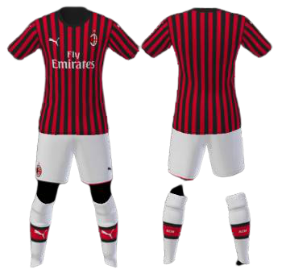

One of my favorite sport teams is proffessional Italian soccer club Milan which have won Italian championship 18 times and holds first place among Italian clubs in European trophies. The football club from the city of the same name was founded in 1899 by British immigrant Alfred Edwards and received a name consonant with the English pronunciation of the city's name, and his compatriot Herbert Kilpin became the first head coach of the team. Kilpin came up with the idea of red and black club colors, which symbolized the colors of the devil and danger.
Home Kit
In the mid-90s of the last century, Milan participaed in the finals for the UEFA Champions League for three years in a row, but the battles for the cup against Marseille (1992/1993) and Ajax (1994/1995) were minimally lost 0-1, and in the 1993/1994 season defeated Barcelona 4-0.
The Italian club also successfully proved itself in the Champions League in the 2000s, they were close to the trophy three more times, winning two of them.
The Champions League of 2003 was one of the hardest finals for Milan playing against Juventus (Italy). The full time ended in a draw. As a result, the winner was determined in a series of penalties. Buffon (Juventus) saved twice, and Dida (Milan) - 3. Andriy Shevchenko scored crucial penalty and won the "Rossoneri" the 6th Champions Cup in the history of the club.